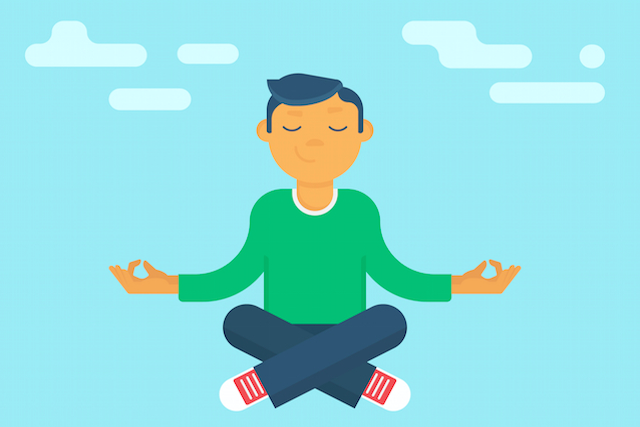
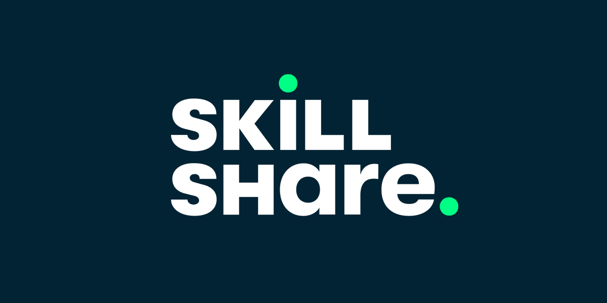

ახლანდელი სიტუაციისდან გამომდინარე მუზეოუმები დაიკეტა,მაგრამ არ მოიწყინოთ Google მომხმარებელს მუზეუმების ვირტუალურად დათვალიერების საშუალებას აძლევს.მაღალი ხარისხის,საინტერესო ტურები საშუალებას მოგცემთ უფასოდ დაათვალიეროთ მუზეუმები სადაც თქვენი საყვარელი ხელოოვანის ნამუშევრები ინახება.ამიტომ კომფორტულად მოთავსდით და ეწვიეთ ბმულს.

რთულია მსგავსი სიტუაციის დროს არ დაისტრესო და მოტივაცია შეინარჩუნო. თუ მთელი დღე წევხართ და სოციალურ მედიას სქროლავთ მალევე მიხვდებით რომ ესეც კი დამღლელი ხდება გარკვეული დროის შემდეგ. თუ დასტრესილი ხართ ნამდვილად უნდა სცადოთ მედიტაცია, Headspace პანდემიის დროს რამოდენიმე უფასო მედიტაციას გთავაზობთ,რომელიც დაგეხმარებათ შეინარჩუნოთ სიმშვიდე. ეწვიეთ ბმულს.
ყველას გვაქვს ჰობი,რომლისთვისაც დრო არასდროს გვრჩება,ახლა იდეალური პერიოდია ამისთვის რომ Skillshare-ის და სხვა უამრავი youtube ვიდეოს საშუალებით ახალი ჰობი შეიძინოთ. ეწვიეთ ბმულს.
Epic games (უფასო თამაში ყოველ კვირა). ეწვიეთ ბმულს.


სკოლების და უნივერსიტეტების ონლაინ სწავლების რეჟიმზე გადასვლამ აზრთა სხვადასხვაობა გამოიწვია,ბევრი თვლის რომ მსგავსი საშუალებებით განათლების სრულფასოვანი მიღება შეუძლებელია,მიუხედავად ამისა არის რამოდენიმე დაწესებულება მათ შორისაა IT step academy,მათ წარმატებით მოახერხეს ონლაინ ლექციების წარმატებით ჩატარება და დღემდე თავდაუზოგავად შრომობენ ყველანაირი ტექნიკური უზრუნველყოფისთვის, მაგრამ მსგავსი სიტუაცია არ არის ყველა სასწავლებელში, თქვენ შეგიძლიათ ისარგებლოთ უამრავი უფასო კურსით რომელსაც სხვადასხვა უცხოური უნივერსიტეტები გვთავაზობენ და ეს დრო თვითგანვითარებისთვის გამოიყენოთ. ეწვიეთ ბმულს.
რაც შეეხება ფიზიკურ აქტივობას,საკმაოდ რთულია იყო ფორმაში მაშინ როცა ერთადერთი გასართობი ჭამა გრჩება და მაცივარიდან მხოლოდ რამოდენიმე მეტრი გაშორებს.ვარჯიში აუცილებელია იმუნური სისტემისთვის და რაც მთავარია ჩენი მენტალური ჯანმრთელობისთის.რაკი სავარჯიშ დარბაზები დახურულია და პარკში სასეირნოდ გასვლაც არ არის რეკომენდირებული შეეცადეთ სახლში ივარჯიშოთ. უფასო სავარჯიშო პროგრამები იხილეთ საიტზე.

gaming-ის მოყვარულებს კი Steam და Epic Games საშუალებას გვაძლევს ფასიანი თამაშები უფასოთ გადმოვწეროთ. მაგალითად GET Drawful 2.